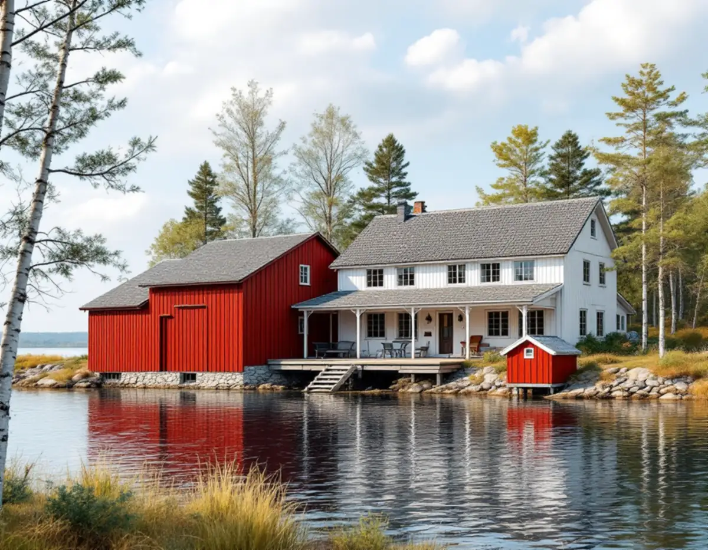
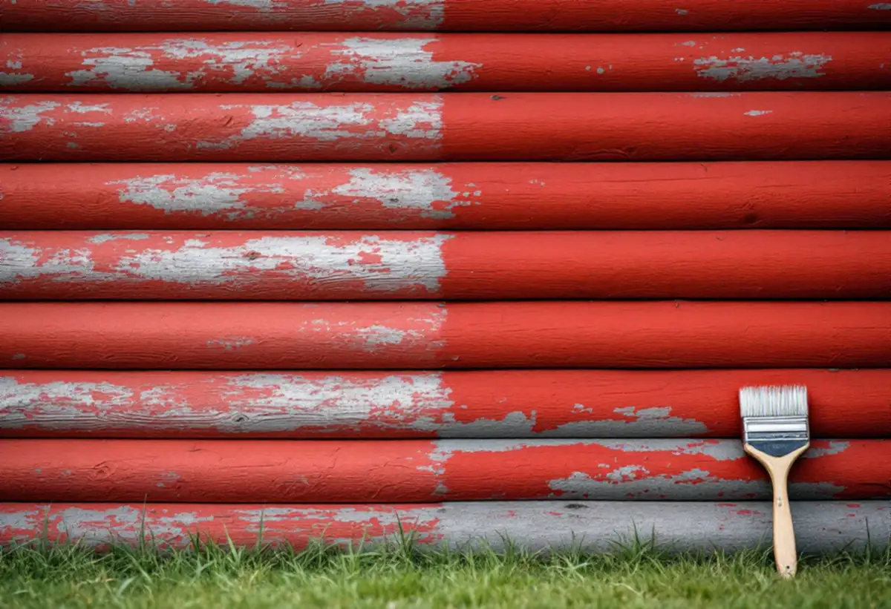

Platsbesök
Vi går igenom varje byggnad och noterar vilken färgtyp den har i dag.
På en äldre gård i Roslagen kan bostadshuset vara ljust målat medan båthuset, dasset och uthusen är rödslammade. Linoljefärg och slamfärg målas om på olika sätt. Geal Entreprenad AB målar fasader i Norrtälje kommun och håller isär färgtyperna när gården ska målas om.

Länsstyrelsens rapport om redargårdarna beskriver de pampiga gårdar som redare och skeppare byggde på Björkö och Arholma i mitten av 1800-talet. Blekunge redargård på Björkö förklarades som byggnadsminne hösten 2007, och vid sidan av den finns ett tiotal välbevarade redargårdar. Mangårdsbyggnaden på Blekunge stod färdig 1831. Den är byggd i liggtimmer, vit och i två våningar, och rapporten lyfter fram huvudbyggnadens höga, ljusa fasader.
Bredvid står helt andra hus. Båthuset är knuttimrat och rödslammat och vilar till hälften på fyra stenkistor ute i vattnet, och det gamla dasset är också rödslammat. Rapporten visar även Norrgården i Skeppsmyra, en redargård med ljust målad mangårdsbyggnad i två våningar. Den ljusa huvudbyggnaden och de rödslammade småhusen hör ihop i gårdsbilden, och den skillnaden är värd att behålla när gården målas om.

Riksantikvarieämbetets handbok beskriver hur en slamfärgad fasad målas om. Den borstas med stål- eller rotborste så att all lös färg och alla lavar försvinner, och dammas sedan av. Spikskallar som har rest sig slås i, skadad panel eller rötskadat ändträ lagas med friskt trä, och sedan räcker det med en strykning. Har färgen tidigare blandats med trätjära behöver tjära normalt tillsättas även i fortsättningen, för att färgen ska fästa och kulören bli jämn.
Kulören kan skilja sig något mellan olika tillverkare, så vid bättring tar vi reda på vilken rödfärg som redan sitter på väggen. Länsstyrelsernas blad om målning på trä påpekar att den rödfärg som säljs i butik i dag har en extra tillsats av linolja, och att rödfärg utan linolja, som den användes förr, måste beställas. Rödfärg utan tillsats åldras vackrare, mörknar inte och flagnar inte heller. Handboken varnar också för att sprutad rödfärg lätt läggs på för tjockt, framför allt under taksprång, vilket kan ge krackelering och avflagning.
Till vit linoljefärg användes förr blyvitt. Det är giftigt och har ersatts av en kombination av titandioxid och zinkvitt, och Länsstyrelsernas blad påminner om att blyvitt och kadmium i dag är förbjudna. Riksantikvarieämbetet skriver att den blyvita linoljefärgen hade en dragning åt grått, och att den som vill kopiera tonen kan bryta färgen med grön umbra. En mindre mängd zinkvitt bör ingå i all linoljefärg för utomhusbruk eftersom det motverkar mögel, och oavsett kulör bör halten vara omkring 15–20 viktsprocent.
Ett rätt strykt linoljelager har lång livslängd, men handboken påpekar att fönstersnickerier, vindskivor och sydfasader behöver målas om oftare än resten. Därför planerar vi mangårdsbyggnadens fönster och utsatta sidor för sig. Om fritidshus och åretruntboende i kommunen kan du läsa under målare i Norrtälje och om äldre bruksvillor under fasadrenovering i Norrtälje.
Enligt rapporten innebär byggnadsminnesförklaringen att Blekunges miljö och byggnader ska bevaras i befintligt skick, och Länsstyrelsen i Stockholms län skriver att den som söker bidrag för ett byggnadsminne också kan behöva söka tillstånd för att ändra det. För bidrag till ekonomibyggnader som lador, smedjor, tvättstugor och torklador gäller att byggnaden ska vara bevarandevärd, ha kvar sin originalkaraktär och stå i sitt kulturhistoriska sammanhang. Åtgärden ska vara väsentlig för byggnadens bevarande och i första hand gälla grund, stomme, fasad och tak.
Bidraget avser de extra kostnader som traditionella material och metoder medför, och ansökan ska vara inne före den 31 oktober året innan arbetet görs. Bidrag ges inte för arbetskostnader som du gör rotavdrag för. Mer om färgtyper i stort finns under målare.
Vi går igenom varje byggnad och noterar vilken färgtyp den har i dag.
Mangårdsbyggnad och uthus får egna poster med färgtyp och strykningar.
Rödfärgade väggar borstas, lagas och stryks en gång med samma sorts färg.
Fasaden tvättas och skrapas, bart trä grundas och linoljefärgen stryks tunt.
Fönster, vindskivor och sydfasad får den extra behandling de behöver.
Vi går runt gården med dig och skriver ner vilka färger som har använts.
Skatteverket ger rotavdrag för arbete i fritidshuset och i bostäder där du bara bor ibland, så länge du äger dem. Att måla och rengöra fasader och att sätta upp och ta ner ställningen ger avdrag på ett småhus.
Avdraget är 30 procent av arbetskostnaden, högst 50 000 kr per person och år och högst 75 000 kr tillsammans med rutavdrag. Färg, material och resor ger inget avdrag. Geal drar avdraget direkt på fakturan.
Hur många byggnader som ska målas, vilken färgtyp var och en har, hur mycket trä som behöver lagas och hur långt det är till gården väger tyngst. Efter ett gratis platsbesök får du ett skriftligt kostnadsförslag.
Fasad, fönster och invändig målning.
Målare i Stockholm →Takbyte, takbesiktning och plåtarbeten.
Takläggare i Norrtälje →Roslagen, skärgård och fritidshus.
Takrenovering i Norrtälje →Stugtomter, strandskydd och avlopp.
Attefallshus i Norrtälje →Fritidshus, WC-tillstånd och brunn.
Badrumsrenovering i Norrtälje →Nytt hus, förhandsbesked och egen brunn.
Byggföretag i Norrtälje →Bruksvillor, sommarvillor och Roslagens trähus.
Fasadrenovering i Norrtälje →Roslagens hus, bruksorter och bidrag i Norrtälje.
Fönsterbyte i Norrtälje →Gårdar, timmerhus och lösa innerbågar i Roslagen.
Fönsterrenovering i Norrtälje →Plankgolv i gamla gårdar och parstugor.
Golvläggare i Norrtälje →Från slipat eller lackat golv till skurgolv.
Golvslipning i Norrtälje →Gasolspis, vedspis och pentry i gäststugan.
Köksrenovering i Norrtälje →Trähus, fritidshus och kustlägen i Norrtälje.
Målare i Norrtälje →Takskydd, rännor och skorstensplåt i Norrtälje.
Plåtslagare i Norrtälje →Fritidshus, altan och gäststuga.
Snickare i Norrtälje →Kust, snö och Roslagens tak.
Takbyte i Norrtälje →Ny tapet i fritidshus och villor.
Tapetsering i Norrtälje →